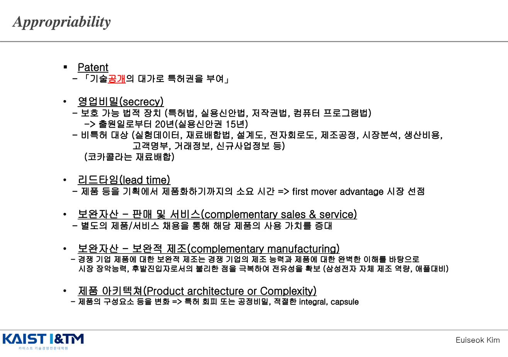
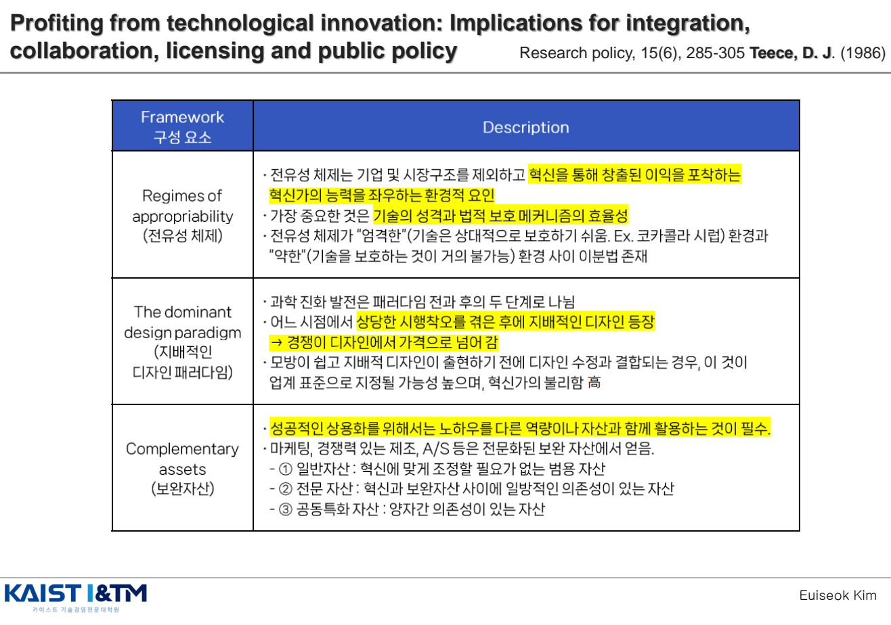
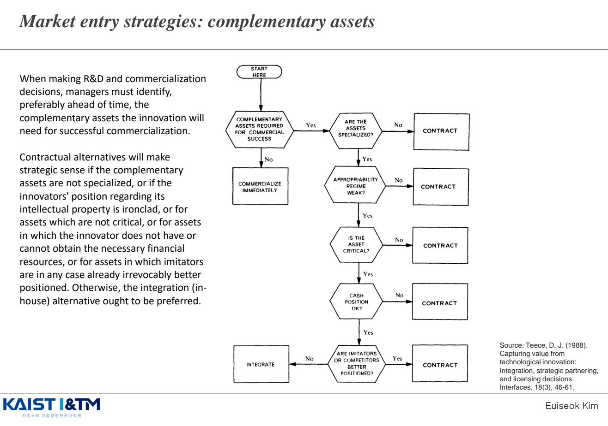
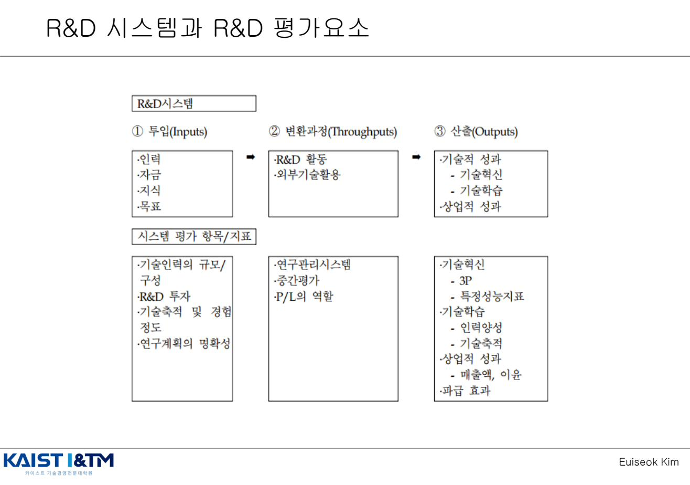
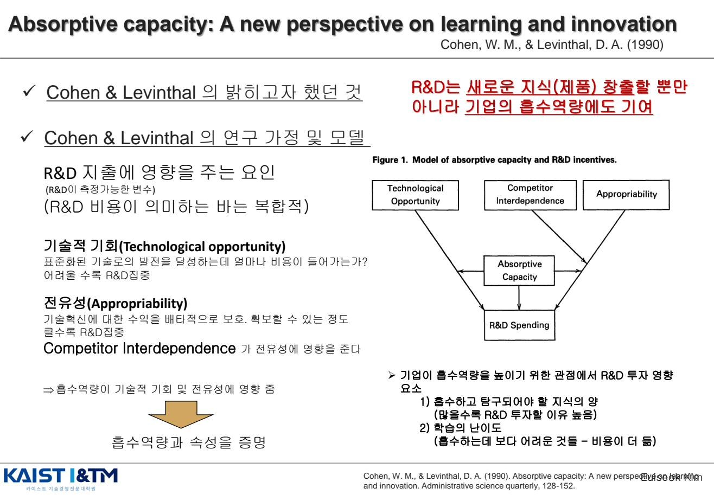

PFI · Chain-link · Absorptive Capacity
혁신에 성공해도 그 이익을 자기가 가져갈 수 있는가는 별개의 문제다. 이 챕터는 "혁신으로부터 이익을 얻는 방법(Profiting From Innovation)"을 다룬다. Teece(1986)의 PFI 프레임워크를 중심으로 전유성(Appropriability)과 보완자산(Complementary Assets)의 개념을 잡고, 그다음 Cohen & Levinthal(1990)의 흡수역량을 통해 외부 지식을 어떻게 자기 것으로 만드는지 본다.
학습 개요
- Appropriability (전유성)의 정의와 5가지 메커니즘
- Teece(1986) PFI 프레임워크의 3대 구성요소: 전유성 체제 / 지배적 디자인 / 보완자산
- 보완자산(Complementary Assets) 3분류: 일반자산 / 전문자산 / 공동특화자산
- R&D 시스템: Input → Throughput → Output 구조와 평가 지표
- Cohen & Levinthal 흡수역량: 외부 지식을 식별·동화·활용하는 역량
1. Appropriability (전유성) — 혁신 이익을 누가 가져갈 것인가 EXAM
Appropriability of innovations는 혁신 활동을 통한 결과물을 경쟁사의 모방으로부터 보호하고 그 이익을 가져갈 가능성을 말한다. 즉, "혁신을 통해 창출된 이익을 포착하는 혁신가의 능력을 좌우하는 환경적 요인"이다.
슘페터가 강조했던 핵심 — "혁신가가 그 보상을 받을 수 있어야 혁신할 동기가 생긴다"는 명제 — 의 실증적 구체화이기도 하다. 전유성이 약하면 누구든 모방해 이익이 분산되고, 혁신가는 투자할 동기를 잃는다.
1.1 전유성을 확보하는 5가지 메커니즘 (예상문제집 27번 빈출)

| 메커니즘 | 핵심 설명 |
|---|---|
| ① Patent (특허) | 「기술 공개의 대가로 특허권 부여」 — 일정 기간 배타적 권리. 다만 공개로 인한 우회 위험 존재 |
| ② 영업비밀 (Secrecy) |
보호 가능 법적 장치: 특허법·실용신안법·저작권법·컴퓨터프로그램법 — 출원일로부터 20년(실용신안 15년) 비특허 대상: 실험데이터, 재료배합법, 설계도, 전자회로도, 제조공정, 시장분석, 생산비용, 고객명부, 거래정보, 신규사업정보 등. 예: 코카콜라의 재료 배합 비밀 |
| ③ 리드타임 (Lead Time) | 제품을 기획에서 제품화하기까지의 소요 시간 → First Mover Advantage로 시장 선점 |
| ④ 보완자산 — 판매 및 서비스 (Complementary Sales & Service) | 별도의 제품/서비스 채용을 통해 해당 제품의 사용 가치를 증대 |
| ⑤ 보완자산 — 보완적 제조 (Complementary Manufacturing) | 경쟁 기업 제품에 대한 보완적 제조는 경쟁 기업의 제조 능력과 제품에 대한 완벽한 이해를 바탕으로 시장 장악능력, 후발진입자로서의 불리한 점을 극복하여 전유성을 확보 (예: 삼성전자 자체 제조 역량, 애플 대비) |
| ⑥ 제품 아키텍처 / 복잡성 (Product Architecture or Complexity) | 제품의 구성요소 등을 변화 → 특허 회피 또는 공정 비밀, 적절한 integral / capsule 설계 |
전유성 체제(Appropriability Regime)의 강·약
"엄격한" 전유성 체제(기술 보호 쉬움, 예: 코카콜라 시럽) vs "약한" 전유성 체제(기술 보호 불가) 사이의 이분법이 존재. 전자에서는 혁신가가 이익을 가져가기 쉽지만, 후자에서는 보완자산 확보 등 다른 전략이 필요.
2. Teece(1986) PFI 프레임워크 EXAM
David Teece가 1986년 Research Policy에 발표한 "Profiting from Technological Innovation: Implications for Integration, Collaboration, Licensing and Public Policy"의 핵심 프레임워크. 혁신 경영에서 가장 영향력 있는 논문 중 하나로, 다음과 같은 질문에 답한다: "왜 혁신한 회사가 이익을 가져가지 못하고 모방자가 가져갈까?"

PFI 프레임워크의 3대 구성요소
| 구성 요소 | 핵심 설명 |
|---|---|
| ① Regimes of Appropriability (전유성 체제) |
|
| ② The Dominant Design Paradigm (지배적 디자인 패러다임) |
|
| ③ Complementary Assets (보완자산) |
|
3. 보완자산(Complementary Assets)과 시장 진입 전략
3.1 보완자산 3가지 유형
- 일반자산(Generic Assets): 혁신에 맞게 조정할 필요가 없는 범용 자산 (예: 일반 제조설비)
- 전문자산(Specialized Assets): 혁신과 보완자산 사이에 일방적인 의존성이 있는 자산
- 공동특화자산(Co-specialized Assets): 양자 간 의존성이 있는 자산 (혁신 ↔ 자산이 서로 필요)
3.2 시장 진입 전략 — 약한 전유성 체제에서

약한 전유성 체제에서 혁신가가 어떤 전략을 선택해야 하는지는 보완자산의 성격에 달려 있다:
- 보완자산이 일반 자산이고 풍부: 시장 거래(market transaction) 활용 — 외주, 라이선싱
- 보완자산이 전문/공동특화이고 부족: 수직 통합(vertical integration) 필요 — 직접 보유해야 함
- 보완자산이 부족하고 수직 통합 불가: 전략적 제휴(strategic alliance) — 보완자산 보유자와 협력
핵심 통찰
PFI 이론의 가장 중요한 함의: "혁신가가 항상 이기는 것은 아니다". 전유성이 약하고 보완자산이 부족하면 모방자나 보완자산 보유자가 혁신의 이익을 가져갈 수 있다. IBM이 PC 시장을 만들었으나 Intel과 Microsoft가 이익을 가져간 것이 대표 사례.
4. R&D 생산성과 R&D 시스템
혁신 활동의 효율성을 평가하기 위한 프레임워크. Input → Throughput → Output → Outcome의 흐름을 따른다.

R&D 시스템 3단계
| 단계 | 요소 | 평가 지표 |
|---|---|---|
| ① 투입 (Inputs) | 인력, 자금, 지식, 목표 | 기술 인력의 규모·구성, R&D 투자, 기술 축적 및 경험 정도, 연구계획의 명확성 |
| ② 변환과정 (Throughputs) | R&D 활동, 외부 기술 활용 | 연구관리시스템, 중간평가, P/L의 역할 |
| ③ 산출 (Outputs) | 기술적 성과 (기술혁신·기술학습), 상업적 성과 | 기술혁신(3P·특정 성능 지표), 기술학습(인력 양성, 기술 축적), 상업적 성과(매출액·이윤), 파급효과 |
R&D 생산성 측정의 어려움
- 투입과 산출의 측정 단위가 다름 (원화 vs 특허 건수 vs 매출)
- R&D 시차(time lag)가 길어 인과관계 파악 곤란
- 혁신은 파급효과·간접효과가 커서 직접 효과만으로는 평가 불충분
5. Cohen & Levinthal — 흡수역량 (Absorptive Capacity, 1990) EXAM
Wesley Cohen과 Daniel Levinthal이 1990년 Administrative Science Quarterly에 발표한 "Absorptive Capacity: A New Perspective on Learning and Innovation"의 핵심 개념. IM06의 개방형 혁신과 함께 이해해야 하는 필수 개념이다.
흡수역량이란 외부의 새로운 정보의 가치를 인식하고, 이를 흡수(동화)하여, 상업적 목적에 적용(활용)할 수 있는 기업의 능력이다.
한 마디로: "외부 지식을 자기 것으로 만드는 역량".

5.1 핵심 명제
R&D의 이중 역할
"R&D는 새로운 지식(제품)을 창출할 뿐만 아니라 기업의 흡수역량에도 기여한다". 즉, R&D 투자는 직접적 산출(특허·제품)만 만드는 것이 아니라, 외부 지식을 이해하고 흡수할 수 있는 능력 자체를 키운다. 이것이 "왜 외부 R&D를 활용하려 해도 내부 R&D가 필수인가"에 대한 답이다.
5.2 R&D 지출에 영향을 주는 요인들
- 기술적 기회 (Technological Opportunity): 표준화된 기술로의 발전을 달성하는데 얼마나 비용이 들어가는가 → 어려울수록 R&D 집중
- 전유성 (Appropriability): 기술혁신에 대한 수익을 배타적으로 보호·확보할 수 있는 정도 → 클수록 R&D 집중. Competitor Interdependence가 전유성에 영향을 줌
- 흡수역량 (Absorptive Capacity): 기술적 기회 및 전유성에 영향을 줌 — 흡수역량과 R&D는 서로를 강화하는 순환 구조
5.3 흡수역량을 높이기 위한 R&D 투자 요인
- 흡수하고 탐구되어야 할 지식의 양 — 많을수록 R&D 투자할 이유가 높음
- 학습의 난이도 — 흡수하는 데 보다 어려운 것들일수록 비용이 더 듦
5.4 흡수역량의 두 차원 (Zahra & George, 2002 확장)
- 잠재적 흡수역량 (Potential AC): 외부 지식의 획득(acquisition)과 동화(assimilation)
- 실현된 흡수역량 (Realized AC): 동화된 지식의 변환(transformation)과 활용(exploitation)
잠재적 흡수역량이 있어도 실현된 흡수역량이 부족하면 외부 지식은 사용되지 않는다 — 이 두 단계 사이의 효율성이 핵심.
5.5 IM06과의 연결 — 왜 개방형 혁신은 흡수역량을 필요로 하는가
Chesbrough의 개방형 혁신은 외부 지식의 효과적 활용을 강조한다. 하지만 흡수역량이 없는 기업은 외부 지식을 가져와도 활용하지 못한다. 즉 개방형 혁신의 성공 조건은 충분한 흡수역량 = 내부 R&D 투자다. "외주로 다 해결할 수 있다"는 단순화는 흡수역량 이론에 의해 반박된다.
예상 문제 매칭
📌 전유성과 5(6)가지 메커니즘 (예상문제집 27번)
"전유성(Appropriability)의 정의를 설명하고, 전유성을 확보하는 메커니즘 5가지를 사례와 함께 서술하시오."
답안 핵심: 정의(혁신 이익 포착 능력) + 5가지 메커니즘(특허 / 영업비밀 / 리드타임 / 보완 판매·서비스 / 보완 제조 / 제품 아키텍처). 코카콜라 영업비밀, 삼성전자 보완 제조 같은 사례 인용.
📌 Teece PFI 프레임워크 (핵심 빈출)
"Teece(1986)의 PFI(Profiting From Innovation) 프레임워크 3대 구성요소를 설명하고, '왜 혁신가가 항상 이익을 가져가지 못하는가'에 답하시오."
답안 핵심:
- 3대 구성: 전유성 체제(엄격/약함) + 지배적 디자인 + 보완자산
- 전유성 약함 + 보완자산이 일반·풍부 → 모방자에게 이익이 흘러갈 수 있음
- 혁신가 vs 모방자 vs 보완자산 보유자 사이의 이익 분배 게임
- 사례: IBM PC → Intel·MS가 이익 가져감
📌 보완자산과 시장 진입 전략
"보완자산(Complementary Assets)의 3가지 유형을 설명하고, 약한 전유성 체제에서 보완자산의 성격에 따른 시장 진입 전략을 서술하시오."
답안 핵심: 일반자산 / 전문자산 / 공동특화자산. 보완자산이 일반·풍부 → 시장 거래 / 부족 → 수직 통합 또는 전략적 제휴.
📌 흡수역량 (예상문제집 빈출)
"Cohen & Levinthal(1990)의 흡수역량(Absorptive Capacity)을 정의하고, R&D 투자와 흡수역량의 관계를 설명하시오."
답안 핵심:
- 정의: 외부 지식의 가치를 인식·동화·활용하는 능력
- 핵심 명제: R&D는 새로운 지식만 만드는 게 아니라 흡수역량 자체도 키움
- 두 차원: 잠재적 AC(획득·동화) vs 실현된 AC(변환·활용)
- 개방형 혁신과의 연결: 외부 지식 활용을 위해서도 내부 R&D 필수
📌 R&D 시스템과 평가
"R&D 시스템의 Input-Throughput-Output 구조를 설명하고, R&D 생산성 측정의 어려움을 서술하시오."
답안 핵심: 3단계 구조 + 각 단계 평가 지표 + 측정 어려움 3가지(단위 차이, 시차, 파급효과).
📌 통합 사고 — PFI와 흡수역량의 관계
"PFI 프레임워크와 흡수역량을 함께 활용하여, 한국 기업이 글로벌 시장에서 혁신 이익을 가져가기 위한 전략을 제시하시오."
답안 핵심: 약한 전유성 체제 + 보완자산 확보 + 내부 R&D를 통한 흡수역량 강화 → 개방형 혁신을 효과적으로 활용.
※ 이 페이지의 모든 그림은 강의자료 IM09_PFI_Productivity_Chainlink_model_and_Absorptive_Capacity.pdf에서 발췌한 것이며, 학습 목적으로만 사용된다.